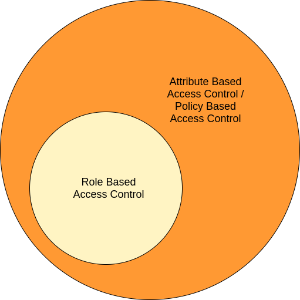
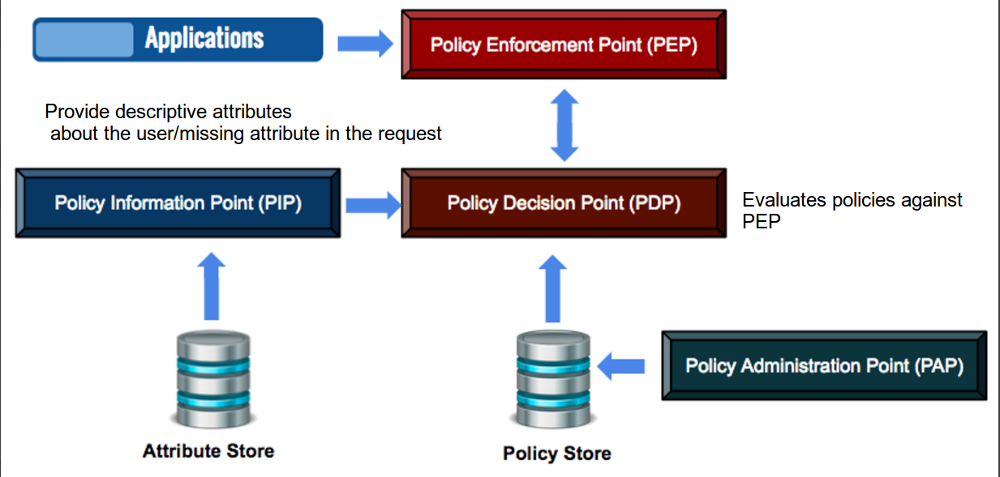
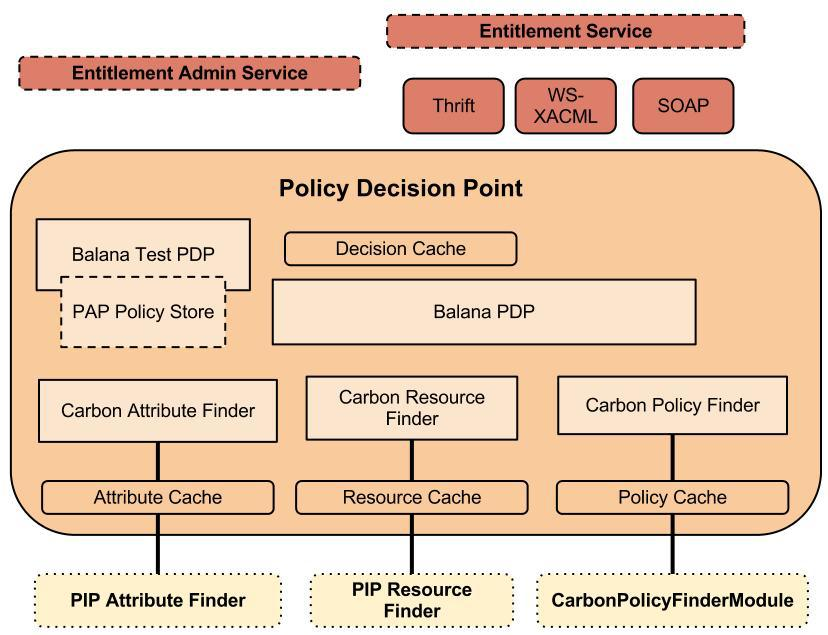
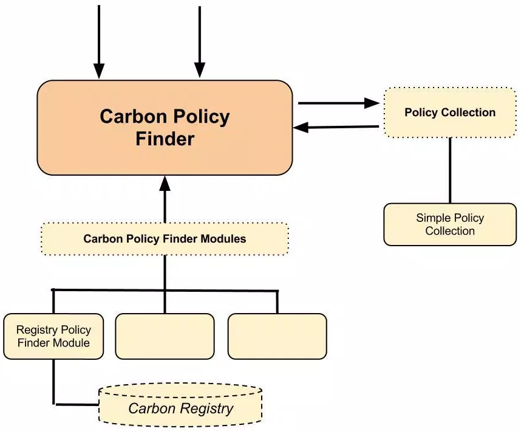
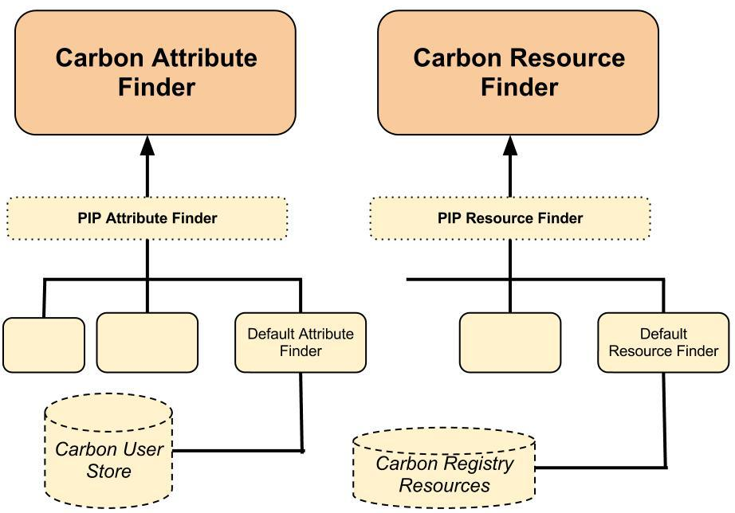

Access Control and Entitlement Management¶
Today, enterprise applications seek ways of enforcing security that allows the right people to access the right resources with restrictions enforced by enterprise policies. Identity and entitlement management systems, as a whole, attempt to address these security considerations. These systems help enterprise architects and developers in their application requirement implementations and try to significantly ease the burden of security-related implementations. These identity and entitlement management systems are governed by industry standard specifications, hence supporting security requirements for heterogeneous applications becomes easy.
Click here for more information on Access control.
Types of access control¶

The following table describes the various types of access control.
| Access Control Type | Description |
|---|---|
Access Control Lists |
Access control lists are the oldest and most basic form of access control. This type was primarily adopted for use in operating systems. This maintains a set of users and operations that can be performed on a resource as a mapping. This is easy to implement due to the use of maps. However, this is not scalable for larger user bases and can become difficult to manage. |
Role-based Access Control |
Role-based Access Control (RBAC) is an approach used to restrict access to authorized users based on their role. This is a static permission model which provides access control. It is used by the majority of enterprises with more than 500 users. This access control type is used when all users are categorized into different roles. The roles define the resources that can be accessed by users assigned to that role. This type of access control reduces management overhead. These users and roles can also be externalized using user stores. These roles need to be managed carefully. There can be instances where a user is assigned to multiple roles. This is a subset of ABAC. Static permissions for roles can be given by updating permission tree in WSO2 Identity Server. Click here for information on Configuring roles and permissions. |
Attribute-based Access Control |
Attribute-based access control (ABAC) defines a new access control paradigm whereby access rights are granted to users through the use of policies that combine attributes together. Here, authorization happens based on attributes. This access control type addresses the limitations of role-based access control to provide a more fine-grained approach. This can be based on the attributes of the user, the environment, or even the resource itself. This is more flexible when compared with the role-based approach. There is no need to know the user prior to granting access. |
Policy-based Access Control |
This type of access control addresses the requirement to have a more uniform access control mechanism. This helps larger enterprises to have uniform access control for the large amount of organizational units. This is helpful when carrying out security audits. This is the most complex form of access control. This involves specifying policies unambiguously using XACML and using authorized attribute sources in the enterprise. Here Policy Based Access Control(PBAC) (also called Rule-based access control) is an extension of ABAC where attributes are used in writing policies. |
Introducing XACML¶
XACML (eXtensible Access Control Markup Language) is an XML-based language for access control that has been standardized by the Technical Committee of the OASIS consortium. XACML is popular as a fine grain authorization method among the community. However, there are aspects of XACML that surpasses other policy standards by being a fine-grained authorization mechanism.
Although XACML was introduced as a standard by OASIS in 2003, not many organizations that have adopted it yet. This is because most organization's lack of interest in moving towards a XACML based solution for authorization. The following can be some of the reasons for this:
- Many software designer and developers lack a clear understanding of features, importance, and advantages of XACML.
- It is comparatively difficult to implement a XACML solution when compared with a typical JDBC or hard-coded authorization system.
- Performance of XACML-based authorization system may be less than adequate.
- The complexity of defining and managing XACML policies.
However, current market trends indicate that there is some motivation for XACML-based authorization systems. This section includes some architectural and implementation details on XACML with an existing XACML engine.
To summarize, XACML describes both an access control policy language, request/response language, and reference architecture. The policy language is used to express access control policies (who can do what, when). The request/response language expresses queries about whether a particular access should be allowed (requests) and describes answers to those queries(responses). The reference architecture proposes a standard for deployment of necessary software modules within an infrastructure to allow efficient enforcement of policies.
WSO2 Identity Server uses XACML as a tool for controlling access to applications.
Recommended reading
For more information on XACML specifications and other related information, see the OASIS website.
Why XACML¶
Most of the organizations still use legacy systems with inbuilt authorization logic. Sometimes, one organization contains a large number of information systems and applications that each system or application uses for their own process for authorization. Today, authorization has become more complex because users within organizations and outside need access to shared data and have the need to collaborate efficiently. Therefore, this has been challenging task to manage these legacy systems, custom authorization systems. However, XACML offers a solution to this problem.
Most traditional authorization systems mostly have the following features:
- Authorization logic is hard-coded into the source code.
- Authorization logic is stored in databases that could only be readable and understandable by the underlying application
The following are the some goals that current organizations are looking at from an authorization system.
- Can business managers (who should determine how access controls would be implemented) define and modify different authorization logic?
- Can we find new IT technicians to manage these legacy systems? Especially when those who developed the system have left the organization?
- Can different authorization logic be modified without any source code changes in a dynamic way?
- Is authorization system capable of evaluating following rule? “X resource can be accessed by the Users who are from example.com domain and whose age is greater than 21 years old”
- If we are going to implement a new information system with the organization, can we re-use the authorization logic of a legacy system?
- Can we achieve a fine-grained authorization level without defining a large number of static combinations?
- Are the authorization systems capable of answering the questions such as: “Can a user, Alex, transfer X amount from Y current account at 1.00pm?“
Clearly, the above goals cannot be achieved from a traditional authorization system. However, a XACML-based authorization solution can help to achieve all of these goals, because XACML:
- is a standard which is ratified by OASIS standards organization.
- is a policy language implemented using XML which is an industry standard.
-
supports Attribute-based Access Control (ABAC) and evaluation can be done with the additional data retrieved from Policy Information Point (PIP) which is defined by the XACML reference architecture.
Note
Attribute-based Access Control(ABAC)¶
ABAC is an access control paradigm whereby access rights are granted to users through the use of policies which combine attributes together. The policies can use any type of attributes (user attributes, resource attributes, object, environment attributes etc.). This model supports boolean logic, in which rules contain "IF, THEN" statements about who is making the request, the resource, and the action. For example: IF the requestor is a manager, THEN allow read/write access to sensitive data.
-
contains reference architecture which is provided to externalize the authorization system. The Policy Decision Point (PDP) offers authorization as a service in your infrastructure. Authorization algorithms can be removed from the application logic and applications can query the PDP via their own Policy Enforcement Points (PEP).
- provides fine-grained authorization with higher level of abstraction by means of policies and rules.
- supports dynamic evaluation of policies by using the Policy Information Point (PIP).
- can publish multiple policies into external PDPs.
XACML system architecture¶
Policy Decision Point (PDP) evaluates policies against access requests provided by Policy Enforcement Points (PEP). To provide the decisions, PDP may also need to query a Policy Information Point (PIP) to gather descriptive attributes about the user or any other missing attribute in the request. Policy Administration Point (PAP) is used to manage the PDP and PIP functionality.

XACML terminology¶
The XACML reference architecture illustrated above is comprised of the following four 'building blocks'.
- Policy Enforcement Point (PEP) : The system entity that performs access control by making decision requests and enforcing authorization decisions. This is the entity that sends the XACML request to the Policy Decision Point (PDP) and receives an authorization decision.
- Policy Decision Point (PDP) : The system entity that evaluates an applicable policy and returns an authorization decision.
- Policy Information Point (PIP) : The system entity that acts as a source of attribute values. If there are missing attributes in the XACML request that is sent by PEP, PIP would find them for the PDP to evaluate the policy.
- Policy Administration Point (PAP) : The system entity that creates a policy or policy set and manages them.
XACML engine architecture¶
The WSO2 Identity Server is a major player in the XACML and open source world. The Identity Server supports XACML 3.0, which is based on Balana XACML implementation. As the source code, distribution and documentation are available for free, it is possible to analyze and understand the architecture behind it. You can find source code from here.
This section provides some information regarding the architecture of the XACML engine (or the entitlement engine) of the WSO2 Identity Server.
The XACML engine of the WSO2 Identity Server has two major components, i.e., PAP and PDP. The section below focuses on Policy Decision Point (PDP).
The following diagram represents the component architecture of the PDP.

The following provides a more detailed information on the various components available in the PDP architecture.
Entitlement Admin Service
All PDP configurations are exposed via this API as a Web service which you need to have certain privileges to access. The following functions can be done by calling this API.
- Invalidating caches
- Refreshing policy, attribute, resource finder modules
- Retrieving PDP configurations
- Includes the function for testing the Test PDP with a given sample request or a sample request with given policies
Entitlement Service
Actual XACML authorization API is exposed via this API as a Web service. This service supports the following three communication methods with PEP.
- SOAP-based Web service
- Thrift binary protocol (this is much faster than SOAP)
- WS-XACML (This is the standard way but not popular)
Balana PDP
This is the core of the engine. Balana PDP has been initialized with all the attribute finders, resource finders and policy finder modules that are plugged with WSO2 Identity Server.
Balana Test PDP
This is same as Balana PDP. However, this instance has been initialized with the PAP policy store. It means, policies that are defined by PAP can be evaluated by using this PDP instance. There is no policy caching or decision caching with this. Therefore, this can only be used for testing your policies in the PAP store. Web service API for Balana Test PDP is exposed via the Entitlement Admin Service with method name “doTestRequest()”.
Carbon Policy Finder
This module finds from different policy stores to evaluate a XACML request. The following is a high-level diagram of how this works.

Any number of policy finder modules can be plugged with the Carbon policy finder.
By default, WSO2 Identity Server is shipped with a Carbon registry-based policy finder module that can retrieve policies from a registry collection.
All modules are initialized and policies are loaded into memory when the Carbon policy finder is used. Loaded policies are kept as a policy collection where you can use your own implementation to access them. The default implementation uses an in-memory cache and creates an effective policy for a given XACML request.
Therefore, the Carbon policy finder always finds effective policies from the policy collection where it is recommended to be kept in-memory. However, if any update in the policy store happens, the Carbon policy finder can be re-initialized automatically by the module that you have written, or you can re-initialize it by using the Web service API (Entitlement Admin Service). Alternatively, you can do it manually using the Identity Server Management Console.
When you are writing a new module, you need to consider the following in addition to policy retrieving and re-initializing.
- Policy ordering - The order which policies are evaluated.
-
Policy combining algorithm
Note
There are Policy Combining Algorithms which are used by Policy Sets and Rule Combining Algorithms which are used by Policies . Each of the algorithms mentioned below has its Policy Combining algorithm and its Rule Combining algorithms as follows:
- Standard combining algorithms defined in XACML 3.0:
- urn:oasis:names:
tc:xacml:3.0:rule-combining-algorithm:deny-overrides - urn:oasis:names:
tc:xacml:3.0:policy-combining-algorithm:deny-overrides - urn:oasis:names:
tc:xacml:3.0:rule-combining-algorithm:permit-overrides - urn:oasis:names:
tc:xacml:3.0:policy-combining-algorithm:permit-overrides - urn:oasis:names:
tc:xacml:1.0:rule-combining-algorithm:first-applicable - urn:oasis:names:
tc:xacml:1.0:policy-combining-algorithm:first-applicable - urn:oasis:names:
tc:xacml:1.0:policy-combining-algorithm:only-one-applicable - urn:oasis:names:
tc:xacml:3.0:rule-combining-algorithm:ordered-deny-overrides - urn:oasis:names:
tc:xacml:3.0:policy-combining-algorithm:ordered-deny-overrides - urn:oasis:names:
tc:xacml:3.0:rule-combining-algorithm:ordered-permit-overrides - urn:oasis:names:
tc:xacml:3.0:policy-combining-algorithm:ordered-permit-overrides - urn:oasis:names:
tc:xacml:3.0:rule-combining-algorithm:deny-unless-permit - urn:oasis:names:
tc:xacml:3.0:rule-combining-algorithm:permit-unless-deny - urn:oasis:names:
tc:xacml:3.0:policy-combining-algorithm:deny-unless-permit - urn:oasis:names:
tc:xacml:3.0:policy-combining-algorithm:permit-unless-deny
- urn:oasis:names:
These algorithms are explained in detail as follows,
-
Deny Overrides:
This combining algorithm combines decisions in such a way that if any decision is a Deny, then that decision wins.
Deny overrides is one of the safest combining algorithms since it favors a Deny decision. However, if none of the children return a Deny decision, then the combining algorithm will never produce a Deny. -
Permit Overrides:
This combining algorithm combines decisions in such a way that if any decision is a Permit, then that decision wins.
The permit overrides combining algorithm can be interesting when:
At least one child must return a Permit for access to be granted overall, regardless of restrictions.
One wants to return all the reasons why access is being denied. This is what one could call a “greedy deny overrides”.For instance, if the reason for not being able to view a resource is that (a) you are not the owner and (b) you are in the wrong department, we could rework the previous example as follows. When a deny reason triggers, the response would be denied with all the applicable reasons for access being denied:
-
Policy Set (deny overrides): role==manager AND action==view AND resourceType==resource
- Policy 1 (permit overrides)
- Rule 1: deny if resourceOwner != userId + Advice(“you are not the owner of the resource”)
- Rule 2: deny if rsourceDepartment != userDepartment+ Advice(“you are not in the same department as the resource)
- Policy 2
- Rule 1: permit
- Policy 1 (permit overrides)
-
First Applicable:
This combining algorithm combines decisions in such a way that the final decision returned is the first one produced either of Permit or Deny. First applicable is useful to shortcut policy evaluation. For instance, if a policy set contains a long series of not applicable policies and one applicable policy which returns either of Permit or Deny, then if that policy comes first and does produce Permit or Deny, the PDP will stop there and not process the other siblings. -
Deny Unless Permit | Permit Unless Deny:
In XACML there are 4 possible decisions: Permit, Deny, NotApplicable, and Indeterminate. Sometimes, it is desirable to hide the NotApplicable and Indeterminate decisions to only allow for Permit or Deny. It makes the PEP logic potentially simpler. -
Only One Applicable: This combining algorithm exists only for policy sets to combine policy sets and policies. It cannot be used to combine rules. With this combining algorithm, in order for either of a Permit or Deny to be returned, then only one of the children must produce a valid decision – whether Deny or Permit.
-
Ordered Deny Overrides | Ordered Permit Overrides:
The ordered combining algorithms combine decisions in the same way as their (unordered) cousins. In, addition they bring the guarantee that policies, policy sets, and rules are considered in the order in which they are defined. The need to define an ordered combining algorithm stems from the fact the XACML specification does not specify whether order matters in the deny-overrides and permit-overrides combining algorithms.
- Standard combining algorithms defined in XACML 3.0:
-
How to retrieve referenced policies
Carbon Attribute Finder
This module helps to find the missing attribute for a given XACML request. The following is the high-level diagram for both the Carbon attribute and resource finders.

Any number of PIP attribute finder modules can be plugged with the Carbon attribute finder. You need to implement the PIPAttributeFinder interface to write a new module and register it using the entitlement.properties configuration file. By default, WSO2 Identity Server is shipped with a DefaultAttributeFinder that communicates with the underlying user store of the Identity Server. The default user store of the Identity Server is ApacheDS where it can be changed. Refer Configuring the Realm for more information.
All modules would be initialized and supported attribute Ids are retrieved for each module. During runtime, the Carbon attribute finder checks for the support attribute Id and hands it over to the proper module to handle. A caching machine is used by the Carbon attribute finder for caching the findings or the attribute finder module itself can handle it.
Carbon Resource Finder
This is used to retrieve children or descendant resources of a given root level resource value. Basically, it is used to fulfill the requirement of a multiple decision profile. The implementation is same as the PIP attribute finder module. By default, WSO2 Identity Server is shipped with DefaultResourceFinder (which is the implementation of PIPResourceFinder) that communicates with Carbon registry resources.
XACML policy language structure and syntax¶
In order to render an authorization decision, it is possible to combine the two separate policies to form the single policy applicable to the request.
XACML defines three top-level policy elements:
- Element that contains a boolean expression that can be evaluated in isolation, but that is not intended to be accessed in isolation by a PDP. So, it is not intended to form the basis of an authorization decision by itself. It is intended to exist in isolation only within a XACML PAP, where it may form the basic unit of management.
- Element that contains a set of elements and a specified procedure for combining the results of their evaluation. It is the basic unit of policy used by the PDP, and so it is intended to form the basis of an authorization decision.
- Element that contains a set of or other elements and a specified procedure for combining the results of their evaluation. It is the standard means for combining separate policies into a single combined policy.
As XACML is used in Attribute-based Access Controlling, in XACML all the attributes are categorized into the following four main categories: But from XACML 3.0, custom categories are also supported.
- Subject
- Resource
- Action
- Environment
A Rule is the most elementary unit of policy. It may exist in isolation only within one of the major actors of the XACML domain. The main components of a Rule are as follows:
- <
Target >- This defines the set of requests to which the rule is intended to apply in the form of a logical expression on attributes in the request. - <
Effect >- The effect of the rule indicates the rule-writer's intended consequence of a "True" evaluation of the rule. Two values are allowed: "Permit" and "Deny". - <
Condition >- A Boolean expression that refines the applicability of the rule beyond the predicates implied by its target. Therefore, it may be absent. - <
ObligationExpressions >- Obligation expressions may be added by the writer of the policy. When a PDP evaluates a policy containing obligation expressions, it evaluates the obligation expressions into obligations and returns certain of those obligations to the PEP in the response context. - <
AttributeSelector >- This allows the policy to specify an attribute with given identifier, category and data type. The AttributeSelector on the other hand, provides a mean to lookup the value of attributes using a XPath query by specifying the data type and XPath expression. Attribute selectors are then executed against the XML content that may have been sent along in the initial XACML request.
A sample XACML 3.0 policy is as follows:
<Policy xmlns="urn:oasis:names:tc:xacml:3.0:core:schema:wd-17" PolicyId="samplePolicy" RuleCombiningAlgId="urn:oasis:names:tc:xacml:3.0:rule-combining-algorithm:deny-overrides" Version="1.0">
<Target>
<AnyOf>
<AllOf>
<Match MatchId="urn:oasis:names:tc:xacml:1.0:function:string-equal">
<AttributeValue DataType="http://www.w3.org/2001/XMLSchema#string">read</AttributeValue>
<AttributeDesignator AttributeId="urn:oasis:names:tc:xacml:1.0:action:action-id" Category="urn:oasis:names:tc:xacml:3.0:attribute-category:action" DataType="http://www.w3.org/2001/XMLSchema#string" MustBePresent="true"/>
</Match>
</AllOf>
</AnyOf>
</Target>
<Rule Effect="Permit" RuleId="permit"/>
</Policy>Improvements in XACML 3.0¶
The XACML 3.0 core specification highlights the following main changes in comparison with XACML 2.0.
Custom attribute categories¶
Custom attribute categories can be defined with XACML 3.0. However, in
XACML 2.0, attributes have been organized into subject, resource,
environment or action. For instance, lets's say that you want to create
an attribute category called “foo” in your policy and request. You can
do it with XACML 3.0 easily. According to the XACML 3.0 policy schema,
the category of XACML element is identified by a XML attribute called “
Category ”.
In XACML 2.0 Policy, you can define the attribute designator element as follows, However, it must be a pre-defined category such as subject, resource, environment or action.
<ResourceAttributeDesignator AttributeId="urn:oasis:names:tc:xacml:1.0:resource:resource-id" DataType="http://www.w3.org/2001/XMLSchema#string"/>In a XACML 3.0 Policy, you can define it as follows.
Category can be anything as it is defined as an
attribute of the AttributeDesignator element.
<AttributeDesignator AttributeId="urn:oasis:names:tc:xacml:1.0:resource:resource-id" Category="resource" DataType="http://www.w3.org/2001/XMLSchema#string"/>Improvements in Obligation¶
In general, obligations can have the following:
- An Obligation has an identifier, which is used to distinguish different types of obligations
- An Obligation can have arguments
- Obligations apply to Permit (or Deny) decisions only
A PDP will return, as part of a Permit or Deny response, a (possibly empty) subset of the obligations that appear in the policy.
There are several improvements with Obligations in XACML 3.0 when compared to 2.0.
One of the main improvements is the introduction of Obligation Expressions. This adds dynamic expressions into the obligation statements. For a more in-depth understanding, see the following example:
Let's assume that you want to do following with the Obligation: “On deny, inform the PEP to send an email to the user”.
In XACML 2.0, you need to define the obligation element with the user email statically.
<Obligation ObligationId="send-email" FulfillOn="Deny">
<AttributeAssignment AttributeId="email" DataType="http://www.w3.org/2001/XMLSchema#string">user@foo.com</AttributeAssignment>
</Obligation>However, the user may not be same for each XACML request that is
evaluated. Therefore it is not possible to configure the email
statically in the Obligation element. Obligation can
only inform PEP to send an email to user (it lets the PEP figure out the
value of user’s email).
<Obligation ObligationId="send-email" FulfillOn="Deny">
<AttributeAssignment AttributeId="text" DataType="http://www.w3.org/2001/XMLSchema#string">please send email to user</AttributeAssignment>
</Obligation>However, in XACML 3.0, the email of each user can be retrieved using PIP
in dynamically as we can define an expression element inside the
ObligationExpression . Therefore, obligation can
inform PEP to send an email to user@foo.com address.
<ObligationExpression ObligationId="send-email" FulfillOn="Deny">
<AttributeAssignmentExpression AttributeId="email" DataType="http://www.w3.org/2001/XMLSchema#string">
<AttributeDesignator AttributeId="email" Category="urn:oasis:names:tc:xacml:1.0:subject-category:access-subject" DataType="http://www.w3.org/2001/XMLSchema#string" MustBePresent="false"/>
</AttributeAssignmentExpression>
</ObligationExpression>In XACML 2.0, obligations can only be added to policies and policy sets. However, with XACML 3.0, rules can also contain obligations. At the root of all XACML policies, is a policy or a policy set . A policy represents a single access control policy, expressed through a set of rules. A policy set is a container that can hold other policies or policy sets, as well as references to policies found in remote locations.
Introducing Advice¶
Advice is a newly introduced feature with XACML 3.0.
Advice is similar to obligations and it shares much of its syntax. The
difference is contractual: the PEP can disregard any advice it receives.
PEPs do not have to comply with advice statements; PEPs can consider or
discard the statement. A common scenario is to explain why something was
denied: “User, Alex is denied because Alex does not have a valid email”.
The XACML specification says that any advice returned with a decision can be safely ignored by compliant PEPs. This means that PEPs should work as described in the previous section, regardless of what the PEP does with the advice it may receive. For example, a PEP must allow access if it receives a Permit decision with no obligations, regardless of any advice in the decision.
Improvements in Target¶
Since it is possible to define custom attribute categories, there are
improvements in some related elements in the XACML 3.0 policy, when
compared to 2.0. With XACML 3.0, the Target element
can be used to define more complex authorization logic within itself
when compared with 2.0.
In XACML 2.0, the Target element contains the OR and
AND relationship between the same category. However, in XACML 3.0,
AllOf and AnyOf elements have been
introduced to Target element. That clearly helps to
define the OR and AND relationship between different categories.
As an example, let's look at a Target element. In
XACML 2.0, we have an AND relationship between
foo1 and foo2 resources and an OR
relationship between bar1 and bar2 actions. However, we cannot
create an OR relationship between a foo1 resource
and bar1 action. so we cannot define something such as “Target would
be matched when Alex can access the foo resource or do a bar
action” by using the Target element.
<Target>
<Resources>
<Resource>
<ResourceMatch MatchId="urn:oasis:names:tc:xacml:1.0:function:string-equal">
<AttributeValue DataType="http://www.w3.org/2001/XMLSchema#string">foo1</AttributeValue>
<ResourceAttributeDesignator AttributeId="urn:oasis:names:tc:xacml:1.0:resource:resource-id" DataType="http://www.w3.org/2001/XMLSchema#string"/>
</ResourceMatch>
<ResourceMatch MatchId="urn:oasis:names:tc:xacml:1.0:function:string-equal">
<AttributeValue DataType="http://www.w3.org/2001/XMLSchema#string">foo2</AttributeValue>
<ResourceAttributeDesignator AttributeId="urn:oasis:names:tc:xacml:1.0:resource:resource-id" DataType="http://www.w3.org/2001/XMLSchema#string"/>
</ResourceMatch>
</Resource>
</Resources>
<Actions>
<Action>
<ActionMatch MatchId="urn:oasis:names:tc:xacml:1.0:function:string-equal">
<AttributeValue DataType="http://www.w3.org/2001/XMLSchema#string">bar1</AttributeValue>
<ActionAttributeDesignator AttributeId="urn:oasis:names:tc:xacml:1.0:action:action-id" DataType="http://www.w3.org/2001/XMLSchema#string"/>
</ActionMatch>
</Action>
<Action>
<ActionMatch MatchId="urn:oasis:names:tc:xacml:1.0:function:string-equal">
<AttributeValue DataType="http://www.w3.org/2001/XMLSchema#string">bar2</AttributeValue>
<ActionAttributeDesignator AttributeId="urn:oasis:names:tc:xacml:1.0:action:action-id" DataType="http://www.w3.org/2001/XMLSchema#string"/>
</ActionMatch>
</Action>
</Actions>
</Target>XACML 3.0 has an AND relationship between “ foo ”
resource and bar1 role and an OR relationship
between bar2 action. So we cannot define something as “Target
would be matched, when Alex can access foo resource and do bar1
action or do bar2 action”.
<Target>
<AnyOf>
<AllOf>
<Match MatchId="urn:oasis:names:tc:xacml:1.0:function:string-regexp-match">
<AttributeValue DataType="http://www.w3.org/2001/XMLSchema#string">foo</AttributeValue>
<AttributeDesignator MustBePresent="false" Category="urn:oasis:names:tc:xacml:3.0:attribute-category:resource" AttributeId="urn:oasis:names:tc:xacml:1.0:resource:resource-id" DataType="http://www.w3.org/2001/XMLSchema#string"/>
</Match>
<Match MatchId="urn:oasis:names:tc:xacml:1.0:function:string-equal">
<AttributeValue DataType="http://www.w3.org/2001/XMLSchema#string">bar1</AttributeValue>
<AttributeDesignator MustBePresent="false" Category="urn:oasis:names:tc:xacml:3.0:attribute-category:action"
AttributeId="urn:oasis:names:tc:xacml:1.0:action:action-id" DataType="http://www.w3.org/2001/XMLSchema#string"/>
</Match>
</AllOf>
<AllOf>
<Match MatchId="urn:oasis:names:tc:xacml:1.0:function:string-equal">
<AttributeValue DataType="http://www.w3.org/2001/XMLSchema#string">bar2</AttributeValue>
<AttributeDesignator MustBePresent="false" Category="urn:oasis:names:tc:xacml:3.0:attribute-category:action"
AttributeId="urn:oasis:names:tc:xacml:1.0:action:action-id" DataType="http://www.w3.org/2001/XMLSchema#string"/>
</Match>
</AllOf>
</AnyOf>
</Target>More Functions and Algorithms¶
XACML3 has introduced new String functions such as:
urn:oasis:names:tc:xacml:3.0:function:string-starts-withurn:oasis:names:tc:xacml:3.0:function:string-ends-withurn:oasis:names:tc:xacml:3.0:function:string-containsurn:oasis:names:tc:xacml:3.0:function:string-substring
Some improvements to other functions such as:
urn:oasis:names:tc:xacml:3.0:function:dayTimeDuration-equalurn:oasis:names:tc:xacml:3.0:function:yearMonthDuration-equalurn:oasis:names:tc:xacml:3.0:function:dateTime-add-dayTimeDuration
Also improvements to existing combine algorithms (deny-overrides, permit-overrides, ordered-deny-overrides and ordered-permit-overrides) and new two combine algorithms for policy and rule combining.
urn:oasis:names:tc:xacml:3.0:rule-combining-algorithm:deny-unless-permiturn:oasis:names:tc:xacml:3.0:policy-combining-algorithm:deny-unless-permiturn:oasis:names:tc:xacml:3.0:rule-combining-algorithm:permit-unless-denyurn:oasis:names:tc:xacml:3.0:policy-combining-algorithm:permit-unless-deny
Improvements in XPath¶
New XPath data type is introduced with XACML 3.0. In XACML 2.0, XPath is defined as a String and cannot define the context that the namespace prefix is going to resolve. Also XPath based multiple decisions scheme is introduced with XACML 3.0.
Improvement in XACML Request and Response¶
As it is possible to define custom attribute categories, many types of attribute categories can be in the XACML 3.0 request. XACML 2.0 request can contain only subject, resource, environment or action categories.
The XACML Response can contain additional data such as:
- Request attributes that are defined in the XACML response.
- Applicable policy ids for a given XACML request are defined in the XACML response.
XACML 3.0 Multiple Decision Profile¶
This is a useful profile that allows you to request more than one access control decision in a single XACML request context, and also allows you to request a single combined decision based on multiple individual decisions.
The XACML 3.0 Multiple Decision Profile (MDP) is particularly useful in scenarios where the PEP needs to request decisions for multiple requests in one XACML request, and provides a considerable improvement in performance between the PEP and the PDP in such scenarios.
For a set of tutorials that demonstrate how to work with XACML MDP requests in WSO2 Identity Server, see Working with XACML Multiple Decision Profile Requests .
XACML 3.0 JSON Profile¶
This is a new profile that provides a standardized interface between the PEP and the PDP using JSON. The decision request and response structure is specified in the core XACML specification.
With the introduction of the XACML 3.0 JSON profile , WSO2 Identity Server supports the JSON format in addition to the default XML format with regard to XACML 3.0 requests and responses.
Tip
WSO2 Identity Server also supports working with XACML MDP requests and responses in JSON format .
Following are some of the key points to keep in mind when you work with XACML 3.0 JSON requests and responses via WSO2 Identity Server:
-
Certain parts of JSON requests and responses have default values to avoid bloating. For example, the default value of the data-type of an attribute should be string.
-
The name of the XACML XML attribute element has changed to the category object in JSON so that it is possible to call the parent element.
-
The
<AttributeValue>element in the XML representation no longer exists. Instead a value property is introduced to the attribute object. - The
AdviceIdand theObligationIdattributes of<Advice/>and<Obligation/>XML elements are renamed toIdin JSON. - The order of objects and values in the serialized form (JSON) does not matter in XACML.
-
You can use the short name of identifiers instead of the URI. Following are the supported identifier URIs and the short name for each:
Identifier URI Short name urn:oasis:names: tc:xacml:3.0:attribute-category:resource Resource urn:oasis:names: tc:xacml:3.0:attribute-category:action Action urn:oasis:names: tc:xacml:3.0:attribute-category:environment Environment urn:oasis:names: tc:xacml:3.0:attribute-category:access-subject AccessSubject urn:oasis:names: tc:xacml:3.0:attribute-category:recipient-subject RecipientSubject urn:oasis:names: tc:xacml:3.0:attribute-category:intermediary-subject IntermediarySubject urn:oasis:names: tc:xacml:3.0:attribute-category:codebase Codebase urn:oasis:names: tc:xacml:3.0:attribute-category:requesting-machine RequestingMachine -
The JSON format supports the fully qualified XACML data-type URI, and also supports the short name of the data-type.
XACML data type identifier JSON shorthand type code Mapping/inference rule http://www.w3.org/2001/XMLSchema#stringstring JSON "String" http://www.w3.org/2001/XMLSchema#booleanboolean JSON "Boolean" http://www.w3.org/2001/XMLSchema#integerinteger JSON "Number" without a fractional portion, and within the integer range defined by the XML schema in [XMLDatatypes] http://www.w3.org/2001/XMLSchema#doubledouble JSON "Number" with a fractional portion, or out of the integer range defined by the XML schema in [XMLDatatypes] http://www.w3.org/2001/XMLSchema#timetime None. Inference must fail. http://www.w3.org/2001/XMLSchema#datedate None. Inference must fail. http://www.w3.org/2001/XMLSchema#dateTimedateTime None. Inference must fail. http://www.w3.org/2001/XMLSchema\#dayTimeDurationdayTimeDuration None. Inference must fail. http://www.w3.org/2001/XMLSchema\#yearMonthDurationyearMonthDuration None. Inference must fail. http://www.w3.org/2001/XMLSchema\#anyURIanyURI None. Inference must fail. http://www.w3.org/2001/XMLSchema\#hexBinaryhexBinary None. Inference must fail. http://www.w3.org/2001/XMLSchema\#base64Binarybase64Binary None. Inference must fail. urn:oasis:names: tc:xacml:1.0:data-type:rfc822Name rfc822Name None. Inference must fail. urn:oasis:names: tc:xacml:1.0:data-type:x500Name x500Name None. Inference must fail. urn:oasis:names: tc:xacml:1.0:data-type:ipAddress ipAddress None. Inference must fail. urn:oasis:names: tc:xacml:1.0:data-type:dnsName dnsName None. Inference must fail. urn:oasis:names: tc:xacml:1.0:data-type:xpathExpression xpathExpression None. Inference must fail. -
xpathExpressiondata-type values are represented as JSON objects, and each object contains the following properties:Attribute Type Required Default value XPathCategory URI Yes. You can use the short names defined for identifier URIs as values here. None Namespaces Array of namespace declarations No None XPath String Yes None -
The namespaces property should contain the following properties:
Attribute Type Required Default value Prefix String No None Namespace URI Yes None Following is a sample JSON attribute format that contains the fully qualified XACML data-type URI:
{ "Attribute": { "AttributeId": "urn:oasis:names:tc:xacml:3.0:content-selector", "DataType": "xpathExpression", "Value": { "XPathCategory": "urn:oasis:names:tc:xacml:3.0:attribute-category:resource", "Namespaces": [{ "Namespace": "urn:oasis:names:tc:xacml:3.0:core:schema:wd-17" }, { "Prefix": "md", "Namespace": "urn:example:med:schemas:record" }], "XPath":"md:record/md:patient/md:patientDoB" } } } -
The
MultiRequestsobject is optional in the JSON representation of XACML. The purpose of theMultiRequestsobject is to support the XACML multiple decision profile. -
The JSON attribute object contains an array of attribute objects. The attribute object contains the following properties:
Property name Type Required Default value AttributeId URI Yes None. The identifier used in the XML representation of a XACML attribute will be used in its JSON representation Value Either string, boolean, number (this maps to either a XACML integer or double as defined in supported data types), object, array of strings, array of boolean, Array of number, array of object, or a mixed array of string and number where the string values represents a numerical value. Yes None. Issuer String No Null Data Type URI No The data type value can be omitted in the JSON representation. The default value is http://www.w3.org/2001/XMLSchema#string.IncludeInResult Boolean No False -
The results of the JSON request is represented by the decision object in the form of a JSON Object. This can have following properties:
Property name Type Required Default value Decision String Yes. Possible values are: Permit, Deny, NotApplicable, Indeterminate None. -
The results can have the
status,obligations,associatedAdvice,category, andpolicyIdentifierList, which are optional.
Following is a sample JSON request that you can try out with WSO2 Identity Server:
{
"Request": {
"AccessSubject": {
"Attribute": [
{
"AttributeId": "subject-id",
"Value": "sam",
"DataType": "string",
"IncludeInResult": true
}
]
},
"Resource": {
"Attribute": [
{
"AttributeId": "resource-id",
"Value": "index.jsp",
"DataType": "string",
"IncludeInResult": true
}
]
},
"Action": {
"Attribute": [{
"AttributeId": "action-id",
"Value": "modify-welcome",
"DataType": "string",
"IncludeInResult": true
}
]
}
}
}Following is a sample XACML JSON response that you will get for the above request:
{
"Response": [
{
"Decision": "Deny",
"Status": {
"StatusCode": {
"Value": "urn:oasis:names:tc:xacml:1.0:status:ok"
}
},
"AccessSubject": {
"Attribute": [
{
"AttributeId": "subject-id",
"Value": "dinali",
"IncludeInResult": "true",
"DataType": "string"
}
]
},
"Resource": {
"Attribute": [
{
"AttributeId": "resource-id",
"Value": "index.jsp",
"IncludeInResult": "true",
"DataType": "string"
}
]
},
"Action": {
"Attribute": [
{
"AttributeId": "action-id",
"Value": "modify-welcome",
"IncludeInResult": "true",
"DataType": "string"
}
]
}
}
]
}For a tutorial that demonstrate how WSO2 IS supports fine-grained authorization using XACML requests in JSON format, see Fine-grained Authorization using XACML Requests in JSON Format.
Administrative Delegation Profile¶
This is also a new profile that comes with XACML 3.0. This allows you to define policies about who can write policies about what. For example, "Alex may issue a policy but only about resources in department X”.
XACML 2.0 and XACML 3.0 samples¶
The biggest difference between XACML 2.0 and XACML 3.0 for your client app is that the structure of the attributes in the authentication request has changed significantly in XACML 3.0.
In XACML 2.0, attributes were organized into subject, resource, environment, or action categories using XML element tags:
<Request xmlns="urn:oasis:names:tc:xacml:2.0:context:schema:os"
xmlns:xsi="http://www.w3.org/2001/XMLSchema-instance"
xsi:schemaLocation="urn:oasis:names:tc:xacml:2.0:context:schema:os access_control-xacml-2.0-context-schema-os.xsd">
<Subject>
<Attribute
AttributeId="urn:oasis:names:tc:xacml:1.0:subject:subject-id"
DataType="http://www.w3.org/2001/XMLSchema#string">
<AttributeValue>Julius Hibbert</AttributeValue>
</Attribute>
</Subject>
<Resource>
<Attribute
AttributeId="urn:oasis:names:tc:xacml:1.0:resource:resource-id"
DataType="http://www.w3.org/2001/XMLSchema#anyURI">
<AttributeValue>http://medico.com/record/patient/BartSimpson</AttributeValue>
</Attribute>
</Resource>
<Action>
<Attribute
AttributeId="urn:oasis:names:tc:xacml:1.0:action:action-id"
DataType="http://www.w3.org/2001/XMLSchema#string">
<AttributeValue>read</AttributeValue>
</Attribute>
</Action>
<Environment/>
</Request>In XACML 3.0, these categories are indicated using XML attributes instead of XML element tags:
<?xml version="1.0" encoding="utf-8"?>
<Request xsi:schemaLocation="urn:oasis:names:tc:xacml:3.0:core:schema:wd-17 http://docs.oasis-open.org/xacml/3.0/xacml-core-v3-schema-wd-17.xsd" ReturnPolicyIdList="false" CombinedDecision="false" xmlns="urn:oasis:names:tc:xacml:3.0:core:schema:wd-17" xmlns:xsi="http://www.w3.org/2001/XMLSchema-instance">
<Attributes Category="urn:oasis:names:tc:xacml:1.0:subject-category:access-subject">
<Attribute IncludeInResult="false" AttributeId="urn:oasis:names:tc:xacml:1.0:subject:subject-id">
<AttributeValue DataType="http://www.w3.org/2001/XMLSchema#string">Julius Hibbert</AttributeValue>
</Attribute>
</Attributes>
<Attributes Category="urn:oasis:names:tc:xacml:3.0:attribute-category:resource">
<Attribute IncludeInResult="false" AttributeId="urn:oasis:names:tc:xacml:1.0:resource:resource-id">
<AttributeValue DataType="http://www.w3.org/2001/XMLSchema#anyURI">http://medico.com/record/patient/BartSimpson</AttributeValue>
</Attribute>
</Attributes>
<Attributes Category="urn:oasis:names:tc:xacml:3.0:attribute-category:action">
<Attribute IncludeInResult="false" AttributeId="urn:oasis:names:tc:xacml:1.0:action:action-id">
<AttributeValue DataType="http://www.w3.org/2001/XMLSchema#string">read</AttributeValue>
</Attribute>
</Attributes>
<Attributes Category="urn:oasis:names:tc:xacml:3.0:attribute-category:environment" />
</Request>The <Subject> element in XACML 2.0 becomes
<Attributes Category="urn:oasis:names:tc:xacml:1.0:subject-category:access-subject">
in XACML 3.0, for example. This is the same for the resource,
environment, and action categories.